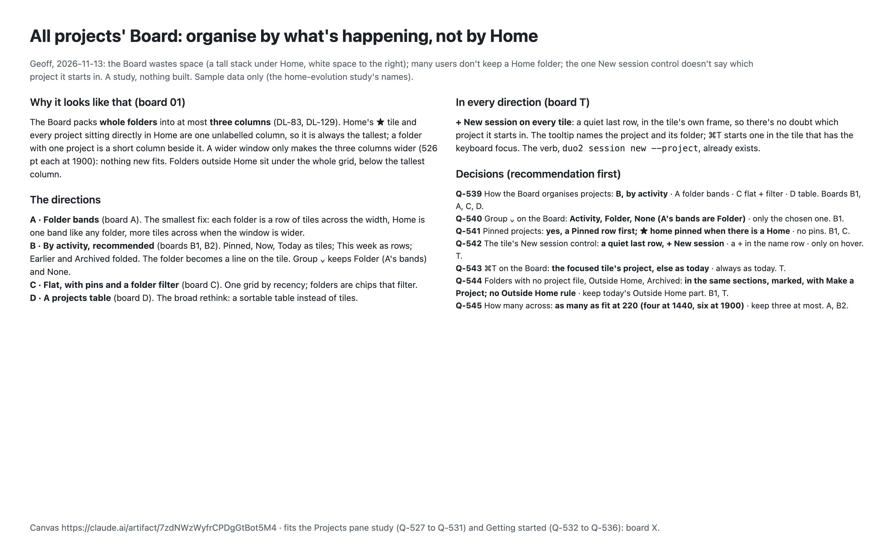
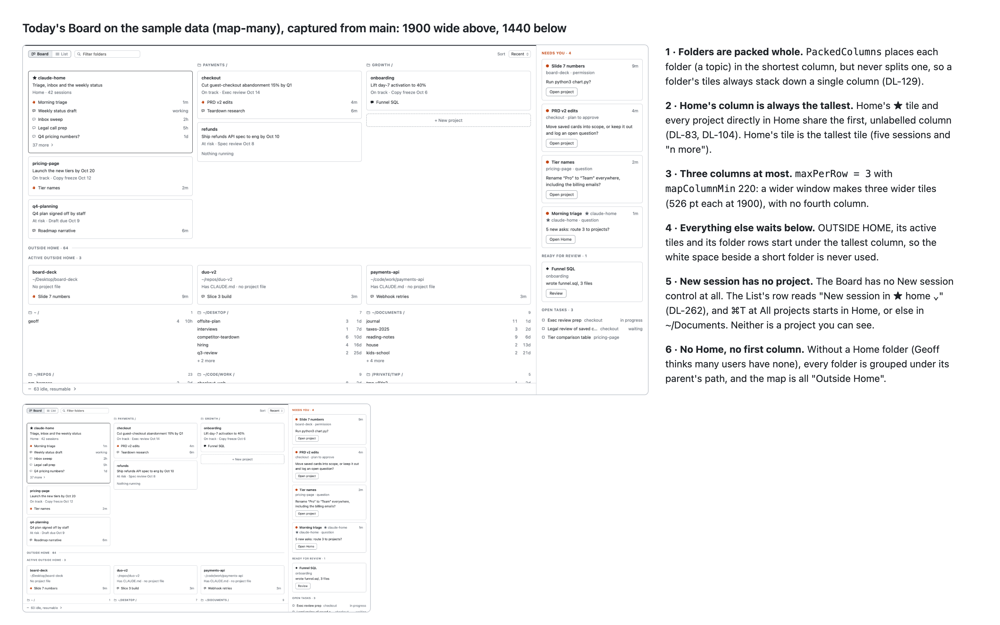
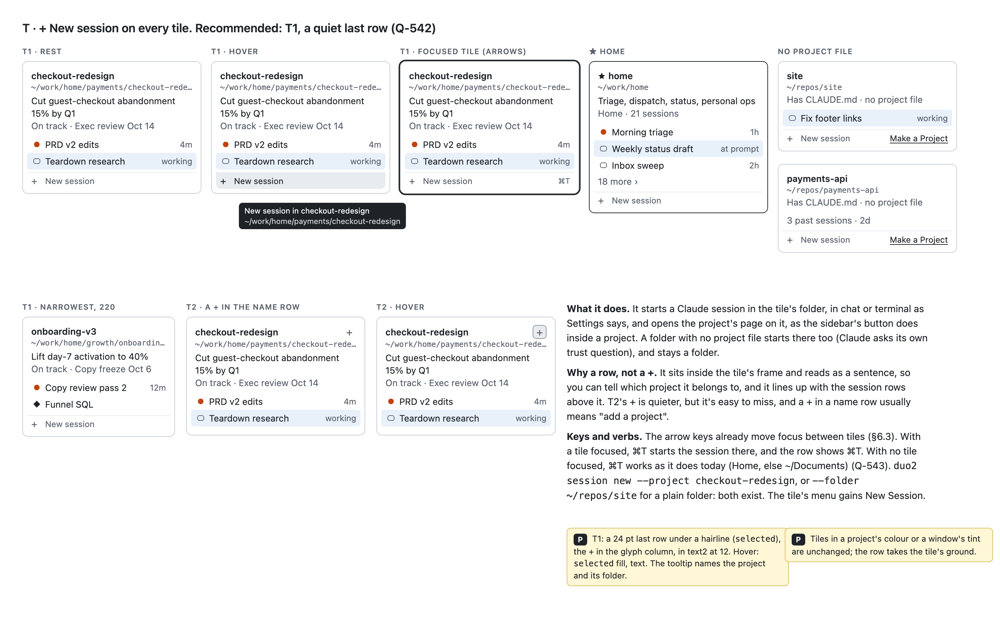
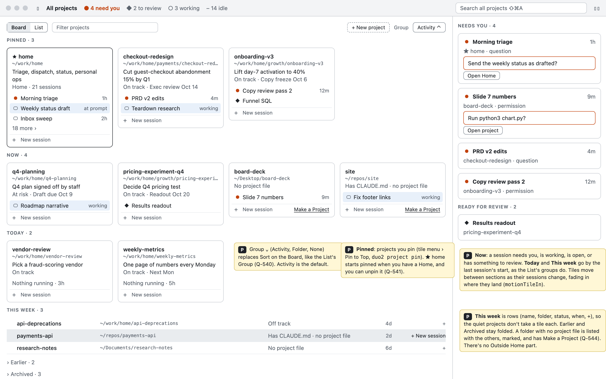
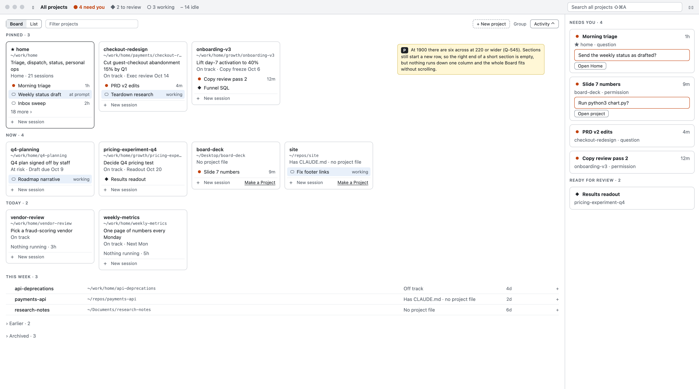
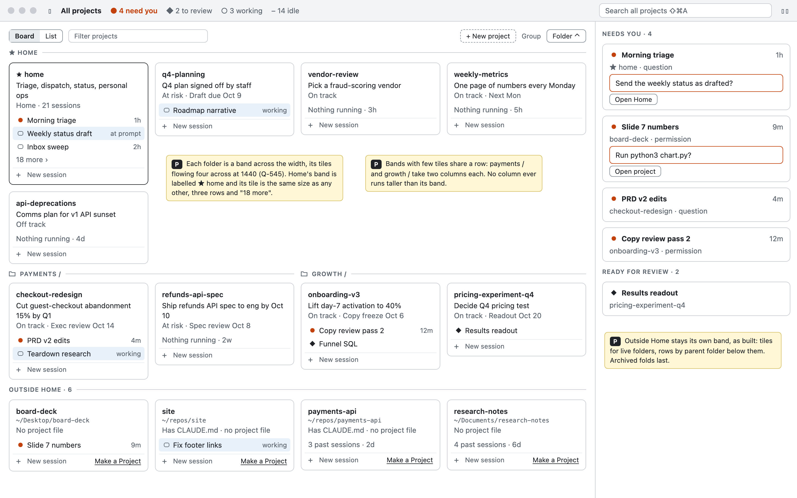
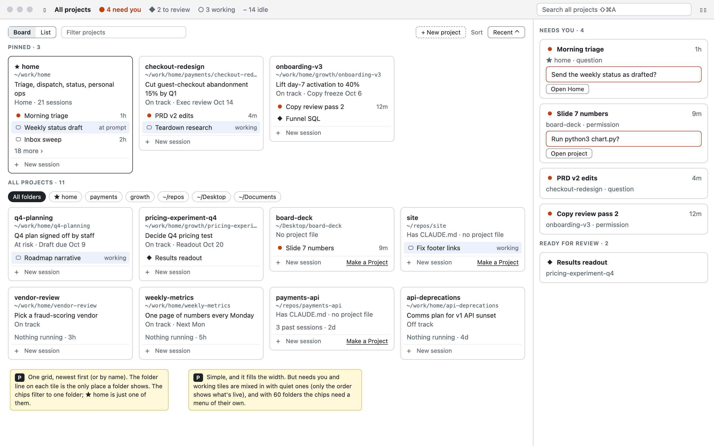
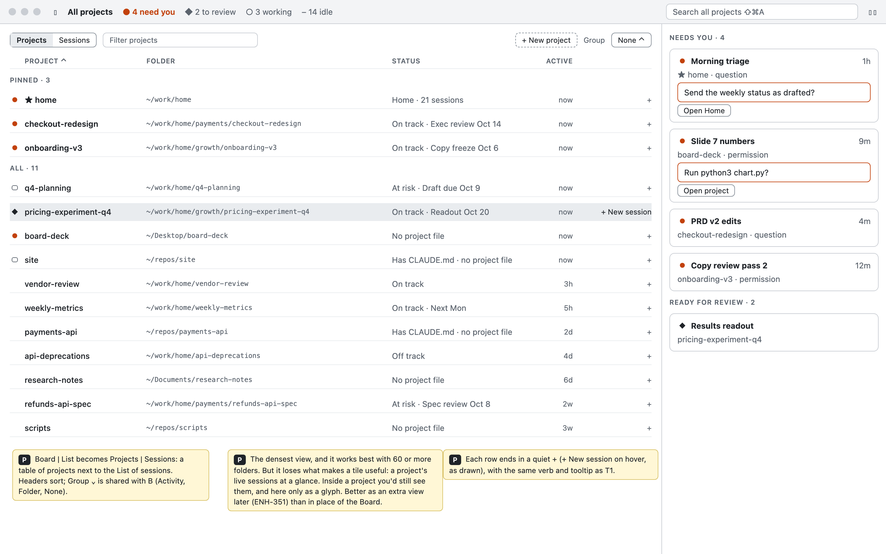
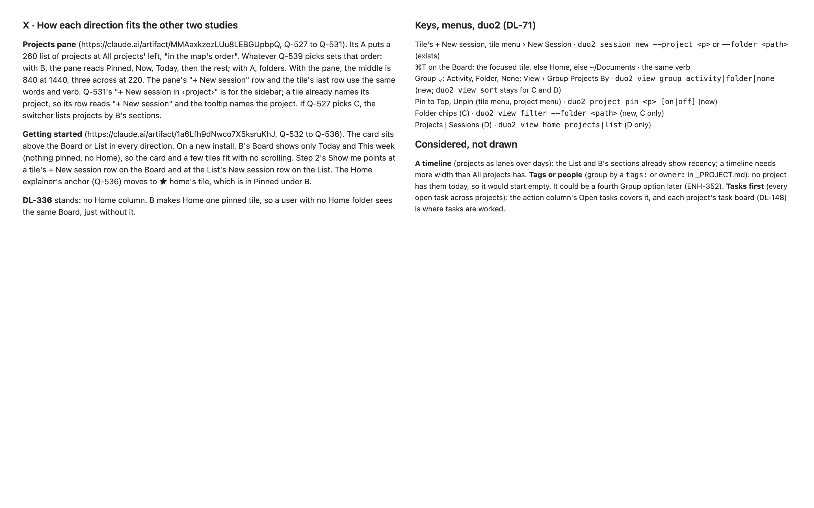

Duo design study · 2026-11-13 · nothing built · sample data
All projects' Board: organise by what's happening, not by Home
You said the Board wastes space (a tall stack under Home, empty space on the right), that many users don't keep a Home folder, and that the one New session control doesn't say which project it starts in. Four directions follow, from a small fix to a broad rethink, with a New session row on every tile in each of them. B is the recommendation. Every mark is a [P].
These boards are also on the Design canvas, https://claude.ai/artifact/7zdNWzWyfrCPDgGtBot5M4, once their sources (in the repo at docs/design/all-projects-board-study/canvas/project/) are loaded there. This page shows the same boards as images.
Board 00
The ask, the directions, the decisions

Board 01
Why the space goes unused
The Board packs whole folders into three columns at most. Home's ★ tile and every project sitting directly in Home share the first column, so that column is always the tallest. A wider window only makes the three columns wider. Captured from main on the sample data, isolated and in the background.

Board T · every direction
+ New session on every tile
Recommended: T1. A quiet last row inside the tile's frame, so you can tell which project it belongs to. The tooltip names the project and its folder. ⌘T starts a session in the focused tile's project. The verb is duo2 session new --project, which already exists.

Boards B1, B2 · recommended
B · By activity
Sections replace folders: Pinned, Now, Today as tiles, This week as rows, Earlier and Archived folded. The folder is a line on each tile. Group ⌄ still offers Folder (A's bands) and None. At 1900 the Board shows six tiles across and fits without scrolling.

B1 · 1440

B2 · 1900Board A
A · Folder bands, the smallest fix
Keeps grouping by folder, but each folder is a row of tiles across the width, Home is a band like any other folder, and short folders share a row.

Board C
C · Flat, with pins and a folder filter

Board D
D · A projects table, the broad rethink

Board X
Fit with the Projects pane and Getting started; keys and verbs; what wasn't drawn

Your decisions · recommendation first
Seven questions
Q-539 How should the Board organise projects? (boards B1, A, C, D) B, by activity· A, folder bands · C, flat with a folder filter · D, a projects table
Q-540 What should the Board's Group ⌄ offer? (B1) Activity, Folder and None, with A's bands as Folder· only the chosen direction
Q-541 Should projects be pinnable? (B1, C) Yes: a Pinned row first, with ★ home pinned when there is a Home· no pins
Q-542 What should the tile's New session control be? (T) A quiet last row, + New session· a + in the name row · shown only on hover
Q-543 What should ⌘T do on the Board? (T) Start in the focused tile's project, else as today· always as today (Home, else ~/Documents)
Q-544 Where do folders with no project file, Outside Home and Archived go? (B1, T) In the same sections, marked, with Make a Project; no Outside Home part· keep today's Outside Home part
Q-545 How many tiles across? (A, B2) As many as fit at 220 wide: four at 1440, six at 1900· keep three at most